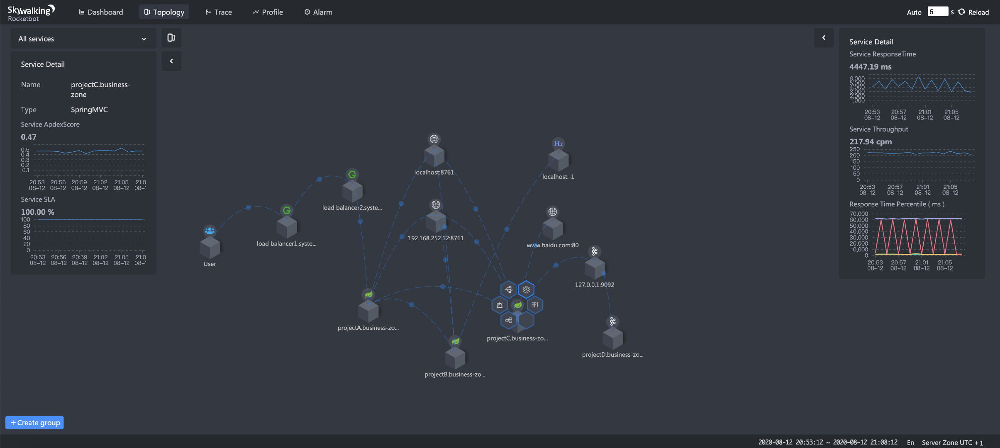

SkyWalking 为超大规模而生
- 作者：吴晟
- 翻译：董旭 金蝶医疗
- 原文链接：Tetrate.io blog
SkyWalking做为Apache的顶级项目，是一个开源的APM和可观测性分析平台，它解决了21世纪日益庞大、分布式和异构的系统的问题。它是为应对当前系统管理所面临的困难而构建的：就像大海捞针，SkyWalking可以在服务依赖复杂且多语言环境下，获取服务对应的指标，以及完整而有意义的性能视图。
SkyWalking是一个非常全面的平台，无论你的微服务是否在服务网格(Service Mesh)架构下，它都可以提供高性能且一致性的监控。
让我们来看看，SkyWalking是如何解决大规模集群的可观测性问题，并从一个纯粹的链路跟踪系统，发展成为一个每天分析百亿级跟踪数据，功能丰富的可观测性平台。
为超大规模而生
SkyWalking的诞生，时间要追溯到2015年，当时它主要应用于监控顶级电信公司（例如：中国联通和中国移动）的第一代分布式核心系统。2013-2014年，这些电信公司计划用分布式系统取代传统的单体架构应用。从诞生那天开始，SkyWalking首要的设计目标，就是能够支持超大型分布式系统，并具有很好可扩展性。那么支撑超大规模系统要考虑什么呢？
拉取vs推送
与数据流向息息相关的：拉取模式和推送模式。Agent（客户端）收集数据并将其推送到后端，再对数据进一步分析，我们称之为“推送”模式。究竟应该使用拉取还是推送？这个话题已经争论已久。关键因素取决于可观测性系统的目标，即：在Agent端花最小的成本，使其适配不同类型的可观测性数据。
Agent收集数据后，可以在短时间内发送出去。这样，我们就不必担心本地缓存压力过大。举一个典型的例子，任意服务都可以轻松地拥有数百个甚至数千个端点指标（如：HTTP的URI，gRPC的服务）。那么APM系统就必须具有分析这些数量庞大指标的能力。
此外，度量指标并不是可观测性领域中的唯一关注点，链路跟踪和日志也很重要。在生产环境下，SkyWalking为了能提供100%采样率的跟踪能力，数据推送模式是唯一可行的解决方案。
SkyWalking即便使用了推送模式，同时也可进行数据拉取。在最近的8.x的发版本中，SkyWalking支持从已经集成Prometheus的服务中获取终端用户的数据，避免重复工程建设，减少资源浪费。另外，比较常见的是基于MQ的传输构建拉取模式，Kafka消费者就是一个比较典型的例子。SkyWalking的Agent端使用推送模式，OAP服务器端使用拉取模式。
结论：SkyWalking的推送模式是原生方式，但拉取式模式也适用于某些特殊场景。
度量指标分析并不仅仅是数学统计
度量指标依赖于数学理论和计算。Percentile（百分位数）是用于反映响应时间的长尾效应。服务具备合理的平均响应时间和成功率，说明服务的服务等级目标(SLO）很好。除此之外，分布式跟踪还为跟踪提供了详细的信息，以及可分析的高价值指标。
运维团队（OPS）和系统稳定性（SRE）团队通过服务拓扑图，用来观察网络情况（当做NOC dashboard使用）、确认系统数据流。SkyWalking依靠trace（跟踪数据），使用STAM（Streaming Topology Analysis Method）方法进行分析拓扑结构。在服务网格环境下，使用ALS（Envoy Access Log Service）进行拓扑分析。节点（services）和线路（service relationships）的拓扑结构和度量指标数据，无法通过sdk轻而易举的拿到。

为了解决端点度量指标收集的局限性，SkyWalking还要从跟踪数据中分析端点依赖关系，从而拿到链路上游、下游这些关键具体的信息。这些依赖关系和度量指标信息，有助于开发团队定位引起性能问题的边界，甚至代码块。

预计算还是查询时计算？
相比查询时计算的灵活性，预计算可以提供更好、更稳定的性能，这在分析场景下尤为重要。回想一下我们的设计原则：SkyWalking是为了一个大规模的分布式系统而设计。查询时计算的使用范围非常有限，大多数度量计算都需要预先定义和预先计算。支持大数据集的关键是：在设计阶段，要减小数据集。预计算允许将原始数据合并到下游的聚合结果中，用于查询，甚至用于警报检查。
使用SkyWalking的另一个重要因素是：指标的有效期，TTL（Time To Live）。由于采用了预先计算，查询提供了近似线性的高性能。这也帮助“查询系统”这类基础设施系统，提供更好的性能扩展。
关于警报，使用查询时计算方案，也意味着警报查询需要基于查询引擎。但在这种情况下，随着数据集增加，查询性能会随之下降，其他指标查询也是一样的结果。
目前使用案例
如今，SkyWalking在许多大型企业的超大规模分布式系统中使用，包括阿里巴巴、华为、腾讯、百度、中国通讯企业以及多家银行和保险公司。上线SkyWalking公司的流量，比银行和电信运营商这种传统公司还要大。
在很多行业中，SkyWalking是被应用于超大型分布式系统各种场景下的一个可观测性平台：
-
拉勾网
-
SkyWalking正在观测超过100个服务，500多个JVM实例
-
SkyWalking每天收集和分析40多亿个跟踪数据，用来分析性能，其中包括30万个端点和依赖关系的指标
-
在整个群集中监控>50k流量/秒
-
-
永辉超市
-
SkyWalking每天分析至少100多亿（3B）的跟踪数据
-
其次，SkyWalking用较小的部署，每天分析2亿多个跟踪数据
-
-
百度
-
SkyWalking每天从1400多个pod中，从120多个服务收集1T以上的跟踪数据
-
随着更多服务的增加，规模会持续增大
-
-
贝壳找房(ke.com)
-
很早就使用了SkyWalking，有两名成员已经成为PMC
-
Deployments每天收集160多亿个跟踪数据
-
-
阿里云效
-
SkyWalking每天收集和分析数十亿个span
-
SkyWalking使阿里云的45项服务和~300个实例保持稳定
-
-
阿里巴巴天猫
-
SkyWalking个性化定制版，每天监控数十亿跟踪数据
-
与此同时，他们基于SkyWalking的Agent技术栈，利用其跟踪和上下文传播能力，正在构建一个全链路压测平台
-
结论
SkyWalking针对可观测性遵循以下原则：
- 理解逻辑模型：不要把可观测性当作数学统计工具。
- 首先确定依赖关系，然后确定它们的度量指标。
- 原生和方便的支撑大规模增长。
- 在不同的架构情况下，APM各方面表现依然保持稳定和一致。
资源
- 阅读SkyWalking 8.1发布亮点。
- 在Twitter上获取更多SkyWalking更新。
- 注册Tetrate以了解更多有关SkyWalking可观测性的信息。